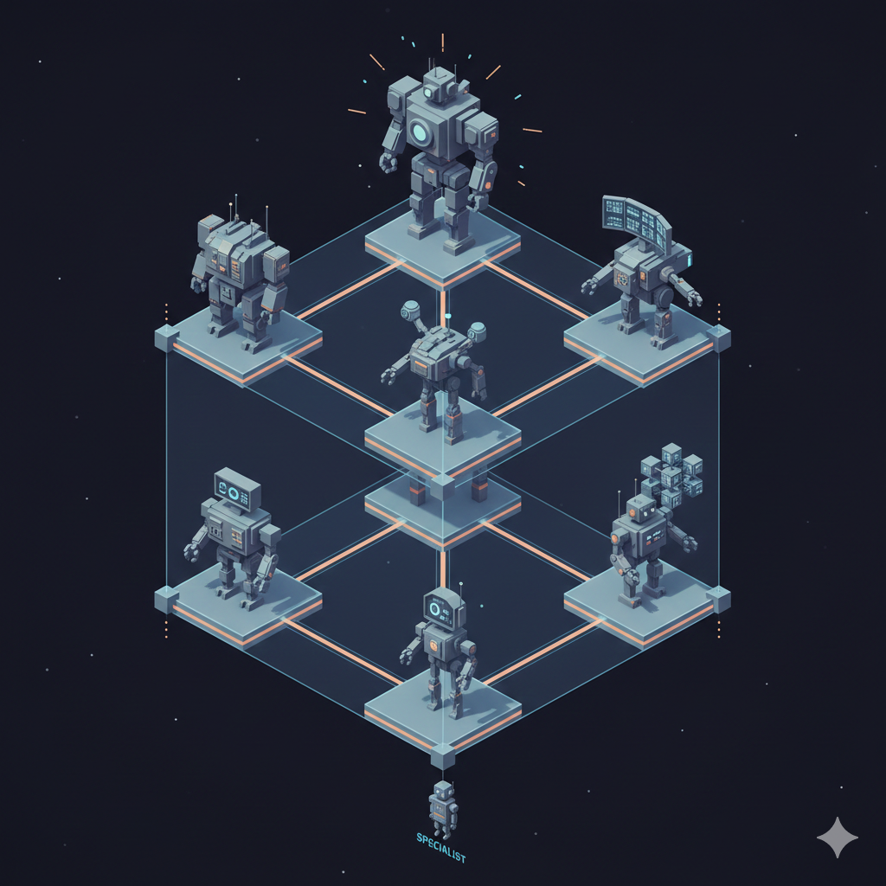

<!DOCTYPE html>
<html lang="en">
<head>
  <meta charset="UTF-8">
  <meta name="viewport" content="width=device-width, initial-scale=1.0">
  <title>ABC Taxonomy for Agent Use Cases</title>
  <script src="https://cdn.tailwindcss.com"></script>
  <script>
    tailwind.config = {
      theme: {
        extend: {
          screens: {
            '3xl': '1700px',
          }
        }
      }
    }
  </script>
  <script src="https://unpkg.com/react@18/umd/react.production.min.js" crossorigin></script>
  <script src="https://unpkg.com/react-dom@18/umd/react-dom.production.min.js" crossorigin></script>
  <script src="https://unpkg.com/@babel/standalone/babel.min.js"></script>
  <script src="https://unpkg.com/lucide@latest"></script>
  <style>
    @keyframes ping {
      75%, 100% {
        transform: scale(2);
        opacity: 0;
      }
    }
    .animate-ping {
      animation: ping 1s cubic-bezier(0, 0, 0.2, 1) infinite;
    }
  </style>
</head>
<body>
  <div id="root"></div>

  <script type="text/babel">
    const { useState, useEffect } = React;

    // Icon components using Lucide
    const IconComponent = ({ name, size = 24, strokeWidth = 2, className = '' }) => {
      const ref = React.useRef(null);

      useEffect(() => {
        if (ref.current && lucide.icons[name]) {
          ref.current.innerHTML = '';
          const svg = lucide.icons[name].toSvg({
            width: size,
            height: size,
            'stroke-width': strokeWidth
          });
          ref.current.innerHTML = svg;
        }
      }, [name, size, strokeWidth]);

      return <span ref={ref} className={className} style={{ display: 'inline-flex', alignItems: 'center' }} />;
    };

    // --- Data & Configuration ---
    const dimensions = {
      A: { label: 'Autonomy', icon: 'zap', color: 'text-amber-500', bg: 'bg-amber-500', border: 'border-amber-200', desc: 'Capacity to act without human intervention' },
      B: { label: 'Breadth', icon: 'globe', color: 'text-blue-500', bg: 'bg-blue-500', border: 'border-blue-200', desc: 'Scope of tasks (Generalist vs Specialist)' },
      C: { label: 'Correctness', icon: 'shield', color: 'text-emerald-500', bg: 'bg-emerald-500', border: 'border-emerald-200', desc: 'Cost of error (Reliability requirements)' }
    };

    const nodes = {
      '000': {
        id: '000', label: 'Specialist', level: 0,
        dimensions: { A: false, B: false, C: false },
        icon: 'anchor',
        desc: 'Operates in one narrow field, provides non-critical suggestions, and has no power to act. The safest starting point for AI integration.',
        examples: [
          'Synonym suggester for a technical manual.',
          'Spotify song recommendation engine.',
          'Gmail "Smart Compose" autocomplete suggestions.'
        ],
        x: 50, y: 92
      },
      '100': {
        id: '100', label: 'Tinkerer', level: 1,
        dimensions: { A: true, B: false, C: false },
        icon: 'user',
        desc: 'Specialized tool granted power to act where errors are trivial. Useful for low-risk automation tasks.',
        examples: [
          'Robot autonomously sorting scrap plastic by color.',
          'Roomba vacuum cleaner navigating a living room.',
          'Game NPC with simple pathfinding logic.'
        ],
        x: 15, y: 62
      },
      '001': {
        id: '001', label: 'Brainstormer', level: 1,
        dimensions: { A: false, B: true, C: false },
        icon: 'brain',
        desc: 'Generalist providing wide-ranging ideas; human review filters inaccuracies. High creativity, low liability.',
        examples: [
          'LLM generating marketing slogans for diverse industries.',
          'Midjourney creating concept art variants.',
          'ChatGPT drafting rough email outlines.'
        ],
        x: 50, y: 62
      },
      '010': {
        id: '010', label: 'Monitor', level: 1,
        dimensions: { A: false, B: false, C: true },
        icon: 'activity',
        desc: 'Narrow specialist where high correctness is vital, but cannot act. The "Human-in-the-loop" safety net.',
        examples: [
          'AI flagging anomalies in medical telemetry for doctor review.',
          'Factory vision system detecting microscopic defects on chips.',
          'Fraud detection system flagging suspicious credit card transactions.'
        ],
        x: 85, y: 62
      },
      '101': {
        id: '101', label: 'Guardian', level: 2,
        dimensions: { A: true, B: false, C: true },
        icon: 'shield',
        desc: 'High-stakes agency within a narrow, controlled domain. Safety is the primary constraint.',
        examples: [
          'Automated emergency braking system in a car.',
          'Nuclear reactor automatic scram (shutdown) system.',
          'Insulin pump automatically adjusting basal rates based on glucose.'
        ],
        x: 50, y: 32
      },
      '110': {
        id: '110', label: 'Explorer', level: 2,
        dimensions: { A: true, B: true, C: false },
        icon: 'globe',
        desc: 'Generalist granted power to act in low-stakes environments. Capable of complex interaction but prone to hallucination.',
        examples: [
          'Bot generating and posting experimental art to social media.',
          'AI Agent playing an open-world video game (Minecraft bot).',
          'Automated web scraper traversing unknown site structures.'
        ],
        x: 15, y: 32
      },
      '011': {
        id: '011', label: 'Advisor', level: 2,
        dimensions: { A: false, B: true, C: true },
        icon: 'layers',
        desc: 'Highly accurate generalist; provides critical insights but lacks authority. The "Oracle" model.',
        examples: [
          'Strategic analysis AI for CEO decision support.',
          'Legal research assistant citing case law with 100% accuracy.',
          'Medical diagnostic support tool for rare diseases.'
        ],
        x: 85, y: 32
      },
      '111': {
        id: '111', label: 'Commander', level: 3,
        dimensions: { A: true, B: true, C: true },
        icon: 'crosshair',
        desc: 'The apex: High autonomy, high accuracy, and high breadth. The theoretical limit of AGI utility.',
        examples: [
          'Enterprise AGI autonomously managing global logistics and finance.',
          'Fully autonomous AI Surgeon performing general surgery.',
          'City-wide AI traffic control system adjusting physical signals.'
        ],
        x: 50, y: 8
      }
    };

    const edges = [
      { from: '000', to: '100' }, { from: '000', to: '001' }, { from: '000', to: '010' },
      { from: '100', to: '110' }, { from: '100', to: '101' },
      { from: '001', to: '110' }, { from: '001', to: '011' },
      { from: '010', to: '101' }, { from: '010', to: '011' },
      { from: '110', to: '111' }, { from: '101', to: '111' }, { from: '011', to: '111' }
    ];

    // --- Sub-Components ---

    const IsometricHeroGraphic = () => (
      <svg viewBox="0 0 400 300" className="w-full h-full text-indigo-600">
        <defs>
          <linearGradient id="cubeGradient" x1="0%" y1="0%" x2="100%" y2="100%">
            <stop offset="0%" style={{ stopColor: '#4f46e5', stopOpacity: 0.1 }} />
            <stop offset="100%" style={{ stopColor: '#4f46e5', stopOpacity: 0.02 }} />
          </linearGradient>
        </defs>

        <circle cx="200" cy="150" r="120" fill="url(#cubeGradient)" />

        <g transform="translate(200, 150) scale(0.8)">
          <path d="M-86 -50 L0 -100 L86 -50 M0 -100 L0 0" stroke="currentColor" strokeWidth="1" strokeDasharray="4 4" opacity="0.2" fill="none" />
          <path d="M0 0 L0 100 M0 100 L-86 50 M0 100 L86 50" stroke="currentColor" strokeWidth="2" strokeLinecap="round" fill="none" />
          <path d="M-86 50 L-86 -50 L0 0" stroke="currentColor" strokeWidth="2" strokeLinecap="round" fill="none" />
          <path d="M86 50 L86 -50 L0 0" stroke="currentColor" strokeWidth="2" strokeLinecap="round" fill="none" />

          <circle cx="0" cy="100" r="4" fill="#4f46e5" />
          <circle cx="-86" cy="50" r="4" fill="#4f46e5" />
          <circle cx="86" cy="50" r="4" fill="#4f46e5" />
          <circle cx="0" cy="0" r="4" fill="#4f46e5" />
          <circle cx="-86" cy="-50" r="4" fill="#cbd5e1" />
          <circle cx="86" cy="-50" r="4" fill="#cbd5e1" />
          <circle cx="0" cy="-100" r="4" fill="#cbd5e1" />

          <text x="-100" y="70" className="text-[10px] font-mono fill-amber-500 font-bold tracking-wider">AUTONOMY</text>
          <text x="50" y="70" className="text-[10px] font-mono fill-blue-500 font-bold tracking-wider">BREADTH</text>
          <text x="-30" y="-110" className="text-[10px] font-mono fill-emerald-500 font-bold tracking-wider">ACCURACY</text>
        </g>
      </svg>
    );

    const DimensionCard = ({ label, active, icon, colorClass, desc }) => (
      <div className={`flex items-start p-3 rounded-lg border transition-all duration-300 ${active ? 'bg-white border-slate-200 shadow-md transform scale-[1.02]' : 'bg-slate-50 border-transparent opacity-60 grayscale'}`}>
        <div className={`p-2 rounded-md mr-3 text-white ${active ? colorClass.replace('text-', 'bg-') : 'bg-slate-300'}`}>
          <IconComponent name={icon} size={16} strokeWidth={2.5} />
        </div>
        <div className="flex-1">
          <div className="flex justify-between items-center mb-1">
            <span className={`font-bold text-sm ${active ? 'text-slate-800' : 'text-slate-500'}`}>{label}</span>
            {active && <span className="text-[10px] font-bold uppercase px-2 py-0.5 rounded-full bg-slate-100 text-slate-600">High</span>}
          </div>
          <p className="text-[11px] leading-tight text-slate-500">{desc}</p>
        </div>
      </div>
    );

    // --- Main App ---

    const App = () => {
      const [selectedId, setSelectedId] = useState('000');
      const activeNode = nodes[selectedId];

      const getLineColor = (from, to) => {
        if (selectedId === from || selectedId === to) return '#6366f1';
        return '#cbd5e1';
      };

      const getLineWidth = (from, to) => {
        if (selectedId === from || selectedId === to) return 1;
        return 0.5;
      };

      return (
        <div className="flex flex-col 3xl:flex-row min-h-screen 3xl:h-screen bg-slate-50 font-sans text-slate-900 3xl:overflow-hidden relative">

          <div className="absolute inset-0 opacity-20 pointer-events-none z-0">
            
          </div>

          {/* 1. HERO SECTION - Left column on 2xl */}
          <div className="bg-white/70 border-b 3xl:border-b-0 3xl:border-r border-slate-200 shadow-sm flex-none 3xl:w-[clamp(380px,28vw,700px)] 3xl:h-full 3xl:overflow-y-auto z-10 relative overflow-hidden">


            <div className="max-w-7xl 3xl:max-w-none mx-auto px-6 py-10 3xl:py-8 flex items-center justify-between relative z-10">
              <div className="max-w-3xl 3xl:max-w-none pr-8 3xl:pr-0">
                 <div className="flex items-center gap-3 mb-3">
                   <span className="px-2 py-0.5 rounded bg-indigo-100 text-indigo-700 text-[10px] font-bold uppercase tracking-widest border border-indigo-200">System Architecture</span>
                   <span className="text-slate-400 text-xs font-mono flex items-center gap-1">
                     <span className="w-1.5 h-1.5 rounded-full bg-emerald-400"></span> Live Model v1.2
                   </span>
                 </div>

                 <h1 className="text-4xl md:text-5xl 3xl:text-3xl font-black tracking-tight text-slate-900 mb-4 leading-tight">
                   The <span className="text-indigo-600">ABC Taxonomy</span> for Agent Use Cases
                 </h1>

                 <p className="text-slate-600 text-sm md:text-base leading-relaxed mb-4 max-w-2xl">
                   A pragmatic 3-dimensional lattice for classifying AI utility. We replace vague buzzwords with three binary toggles: <strong className="text-amber-600 font-semibold">Autonomy</strong> (Can it act?), <strong className="text-blue-600 font-semibold">Breadth</strong> (Is it a generalist?), and <strong className="text-emerald-600 font-semibold">Correctness</strong> (Is failure expensive?).
                 </p>
                 <p className="text-xs text-slate-400 font-medium">
                   Use the lattice below to map the "Value Gap" between technical capability and business risk.
                 </p>
              </div>
            </div>
          </div>

          {/* 2. MAIN CONTENT AREA - Columns 2+3 on 2xl */}
          <main className="flex-1 flex flex-col md:flex-row 3xl:flex-1 3xl:overflow-hidden relative z-10">

            {/* LEFT: Visualization (Lattice) */}
            <div className="flex-1 relative bg-slate-100/60 flex flex-col min-h-[500px] md:min-h-0">

               <div className="absolute top-4 left-6 z-10 pointer-events-none">
                 <h3 className="text-xs font-bold text-slate-400 uppercase tracking-widest">Functional Lattice View</h3>
               </div>

               <div className="absolute inset-0 opacity-[0.04]"
                    style={{backgroundImage: 'radial-gradient(#64748b 1px, transparent 1px)', backgroundSize: '24px 24px'}}>
               </div>

               {/* The Interactive SVG */}
               <div className="flex-1 flex items-center justify-center p-2 md:p-8 w-full h-full">
                 <div className="relative w-full max-w-3xl h-full select-none flex items-center justify-center">
                    <svg
                      className="w-full h-full drop-shadow-2xl"
                      viewBox="0 0 100 100"
                      preserveAspectRatio="xMidYMid meet"
                    >
                      {/* Edges */}
                      {edges.map((edge, idx) => (
                        <line
                          key={idx}
                          x1={nodes[edge.from].x}
                          y1={nodes[edge.from].y}
                          x2={nodes[edge.to].x}
                          y2={nodes[edge.to].y}
                          stroke={getLineColor(edge.from, edge.to)}
                          strokeWidth={getLineWidth(edge.from, edge.to)}
                          strokeLinecap="round"
                          className="transition-all duration-500 ease-out"
                        />
                      ))}

                      {/* Nodes */}
                      {Object.values(nodes).map((node) => {
                         const isActive = selectedId === node.id;

                         let fill = isActive ? '#4f46e5' : '#ffffff';
                         let stroke = isActive ? '#4f46e5' : '#94a3b8';
                         let r = isActive ? 3.5 : 2.5;

                         return (
                           <g
                             key={node.id}
                             onClick={() => setSelectedId(node.id)}
                             className="cursor-pointer group"
                           >
                             {isActive && (
                               <>
                                 <circle
                                   cx={node.x}
                                   cy={node.y}
                                   r="8"
                                   className="fill-indigo-500/10 animate-ping opacity-75"
                                   style={{ transformBox: 'fill-box', transformOrigin: 'center' }}
                                 />
                                 <circle cx={node.x} cy={node.y} r="6" className="fill-indigo-500/20" />
                               </>
                             )}

                             <circle cx={node.x} cy={node.y} r="10" fill="transparent" />

                             <circle
                               cx={node.x}
                               cy={node.y}
                               r={r}
                               fill={fill}
                               stroke={stroke}
                               strokeWidth="0.5"
                               className="transition-all duration-300"
                             />

                             {/* Label */}
                             <text
                               x={node.x}
                               y={node.y + 7}
                               textAnchor="middle"
                               className={`text-[3.6px] font-bold tracking-tight transition-colors duration-300 ${isActive ? 'fill-black font-extrabold' : 'fill-slate-400'}`}
                             >
                               {node.label}
                             </text>
                           </g>
                         );
                      })}
                    </svg>
                 </div>
               </div>

               {/* Level Legend Overlay */}
               <div className="absolute left-6 bottom-6 flex flex-col gap-2 pointer-events-none opacity-40 hidden sm:flex">
                  <div className="flex items-center gap-2">
                    <div className="w-1.5 h-1.5 rounded-full bg-indigo-500"></div>
                    <span className="text-[10px] font-mono text-slate-600">Level 3: Apex</span>
                  </div>
                  <div className="flex items-center gap-2">
                     <div className="w-1.5 h-1.5 rounded-full bg-slate-400"></div>
                     <span className="text-[10px] font-mono text-slate-600">Level 2: Risk</span>
                  </div>
                  <div className="flex items-center gap-2">
                     <div className="w-1.5 h-1.5 rounded-full bg-slate-300"></div>
                     <span className="text-[10px] font-mono text-slate-600">Level 1: Base</span>
                  </div>
               </div>
            </div>

            {/* RIGHT: Detail Panel */}
            <div className="w-full md:w-[420px] bg-white/70 border-l border-slate-200 flex flex-col shadow-2xl z-30 3xl:overflow-y-auto">

              <div className="p-8 pb-4">
                <div className="flex items-center justify-between mb-4">
                   <span className="px-2 py-1 rounded-md bg-slate-100 text-slate-500 text-[10px] font-bold uppercase tracking-wider border border-slate-200">
                     Level {activeNode.level} Node
                   </span>
                   <div className="text-slate-300">
                     <span className="font-mono text-xs tracking-widest">{activeNode.id.split('').join('-')}</span>
                   </div>
                </div>

                <h2 className="text-3xl font-black text-slate-800 mb-3 flex items-center gap-3">
                  <IconComponent
                    name={activeNode.icon}
                    size={32}
                    strokeWidth={1.5}
                    className={selectedId === '111' ? 'text-indigo-600' : 'text-slate-700'}
                  />
                  {activeNode.label}
                </h2>

                <p className="text-slate-600 text-sm leading-relaxed border-l-2 border-indigo-500 pl-4 py-1">
                  {activeNode.desc}
                </p>
              </div>

              <div className="flex-1 px-8 space-y-8">
                <div>
                  <h3 className="text-[10px] font-bold text-slate-400 uppercase tracking-widest mb-3 flex items-center gap-2">
                     <IconComponent name="layers" size={12} /> Dimensions
                  </h3>
                  <div className="grid gap-2">
                    <DimensionCard
                      {...dimensions.A}
                      active={activeNode.dimensions.A}
                      colorClass={dimensions.A.color}
                    />
                    <DimensionCard
                      {...dimensions.C}
                      active={activeNode.dimensions.C}
                      colorClass={dimensions.C.color}
                    />
                    <DimensionCard
                      {...dimensions.B}
                      active={activeNode.dimensions.B}
                      colorClass={dimensions.B.color}
                    />
                  </div>
                </div>

                <div className="bg-slate-50 rounded-xl p-5 border border-slate-100 relative">
                   <div className="absolute -top-3 left-4 bg-white px-2 py-0.5 rounded border border-slate-100 shadow-sm text-[10px] font-bold text-slate-400 uppercase tracking-wider flex items-center gap-1">
                     <IconComponent name="info" size={10} /> Real World Examples
                   </div>
                   <ul className="space-y-3 mt-1">
                     {activeNode.examples.map((ex, i) => (
                       <li key={i} className="flex items-start gap-2 text-sm text-slate-700">
                         <IconComponent name="check" size={14} className="mt-0.5 text-indigo-400 shrink-0" />
                         <span className="leading-snug">{ex}</span>
                       </li>
                     ))}
                   </ul>
                </div>
              </div>

              <div className="p-6 mt-4 bg-slate-50 border-t border-slate-100 text-center">
                 <p className="text-[10px] text-slate-400 uppercase tracking-widest font-semibold mb-1">Interactive Guide</p>
                 <p className="text-xs text-slate-500 flex items-center justify-center gap-1">
                   Select adjacent nodes to analyze the "Value Gap" <IconComponent name="arrow-right" size={12} />
                 </p>
              </div>

            </div>
          </main>
        </div>
      );
    };

    const root = ReactDOM.createRoot(document.getElementById('root'));
    root.render(<App />);
  </script>
</body>
</html>
